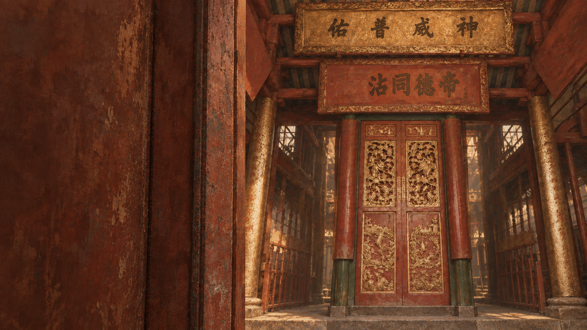

場景未能載入，請重新整理頁面。
到訪前 / 禮儀演練
先練習入門、禮讓及參拜；觀察留待現場。

到訪前的準備，已經完成。
選擇你的考察主題
你接下來會在現場，按照這個方向尋找證據。
暫未能儲存主題，請再試一次。
門檻背景是依東華三院官方照片繪製的現代美術表現，並非史料照片或測量復原；文字問題與歷史結論不以生成圖像為證。
本段是學校到訪前的情境演練。人物、足印、門檻色帶及等候點是教學標示，不代表文物尺寸或廟方指定位置。
「左腳先入、右腳先出」見於民俗記述，未查到東華三院將其列為上環文武廟的硬性規則。這裏把它當成文化示範；安全、無障礙需要及當日廟方指示優先。沒有把上香數目、繞行方向或行禮次數設定成標準答案。
參拜由個人選擇。鐘三下、鼓三下見於東華三院網站收錄的訪談報道，只作獲准時的文化示範；不可自行敲擊。稟願與香燭的先後參考報道所記述的廟方示範影片，真正點火、放香與化寶必須跟從現場安排。節慶安排不能當作全年規則。本程式不收集姓名、生日或地址，也不鼓勵學生觸碰文物與法器。
建築沿用已核對的灰模；神像依東華三院參考照片，以簡化雕塑重繪衣冠、深色面容及左右位置。這是教學重建，並非文物掃描。面向主龕時，關帝在左，文昌在右。圖中沒有使用網上照片作背景或貼圖。